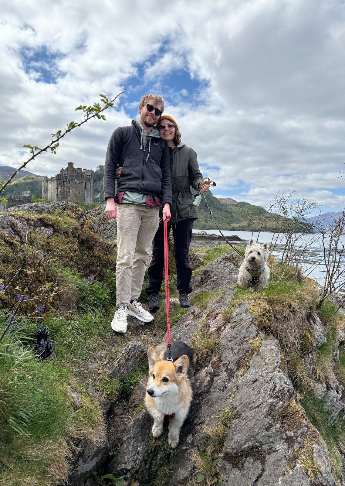
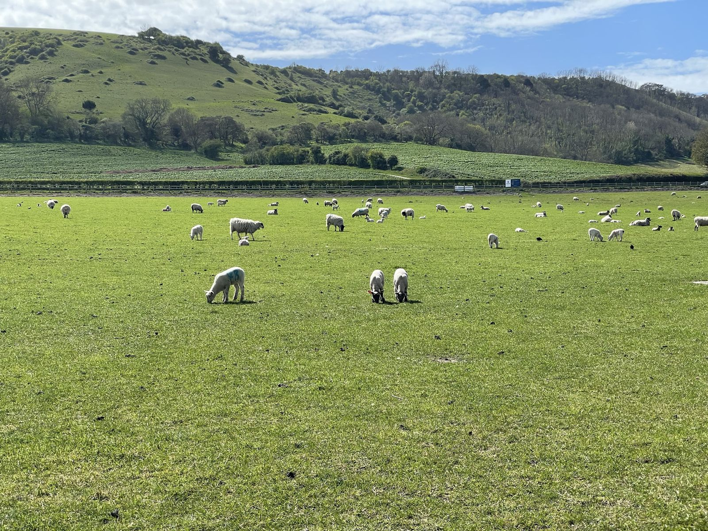
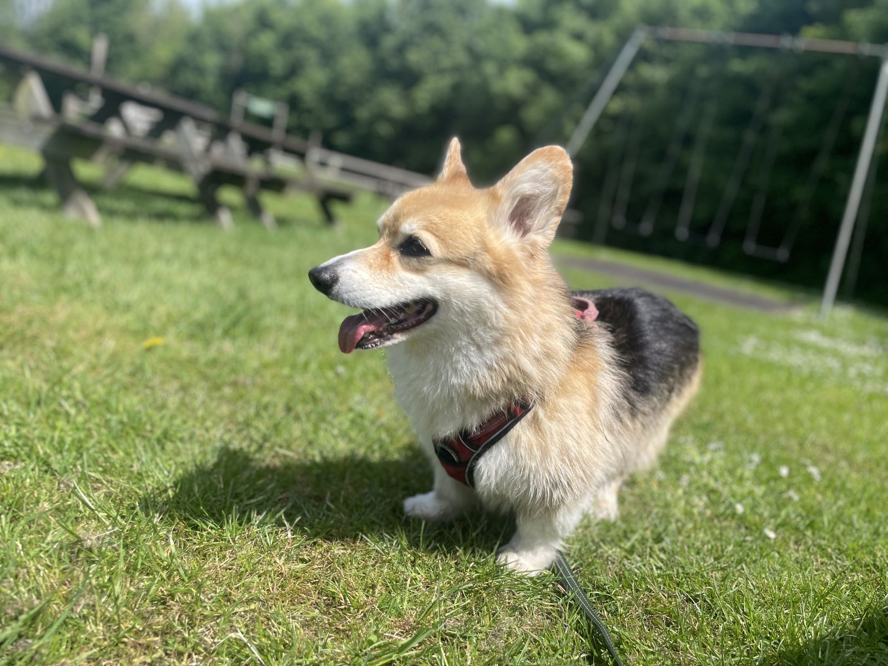
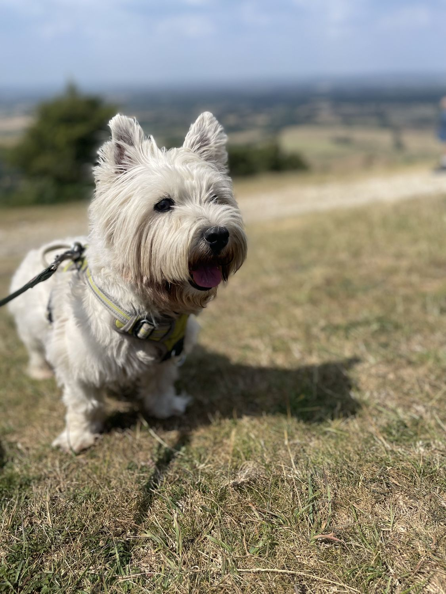
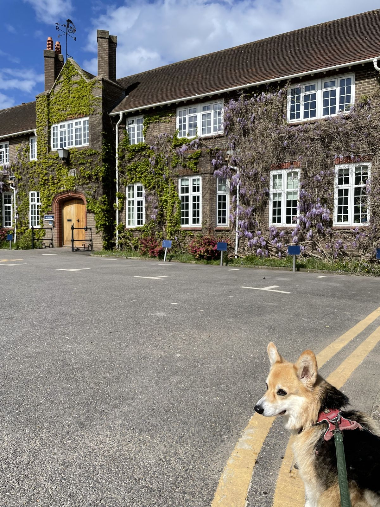
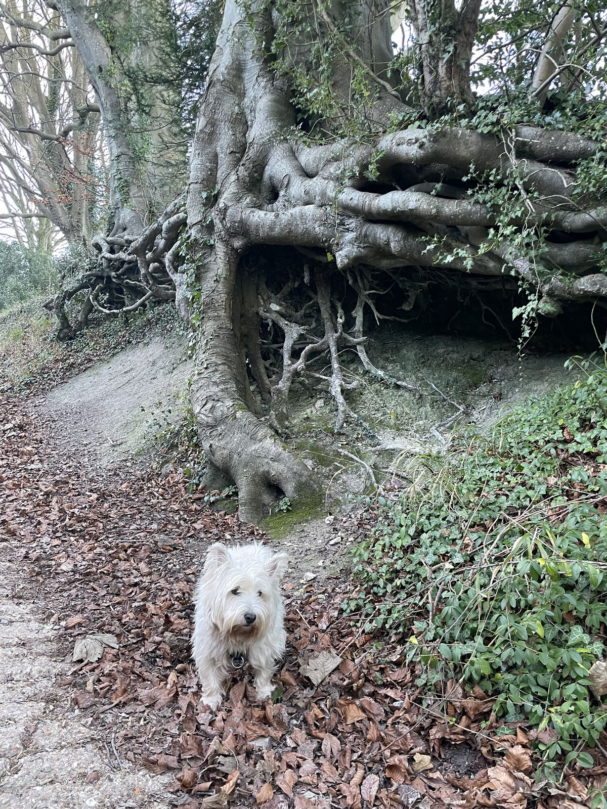
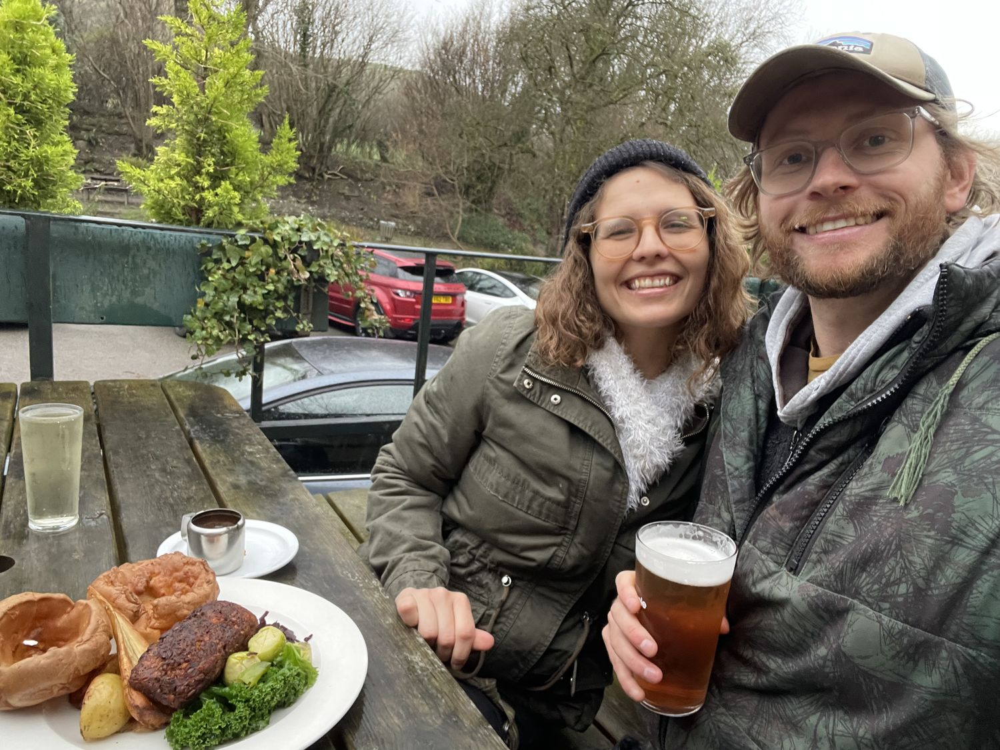

Boas-vindas
Estamos muito animados em convidar vocês para a nossa festa de casamento! O evento será em Plumpton, uma bela e pequena vila nas South Downs. Mal podemos esperar para viver um lindo dia de verão inglês com todos vocês!
O fim de semana
-
Quinta-feira10 de junho
Caminhada pelo circuito de Arundel, passando pelo castelo e pelo Swanbourne Lake, com uma parada no Black Rabbit, à beira do rio. Terminamos com pizza no Norfolk Tap. Não quer fazer o circuito inteiro? Aproveite só o Castelo de Arundel e encontre a gente no Norfolk Tap. Circuito no AllTrails.
-
Sexta-feira11 de junho
Passeio pela orla de Brighton (Brighton Promenade), pelas lojinhas de The Lanes, pelo Brighton Dome e pelos Pavilion Gardens, com um tour guiado pela Ari. Terminamos o dia em um pub.
-
Sábado12 de junho
O casamento no Half Moon, em Plumpton. Detalhes.
-
Domingo13 de junho
Um delicioso Sunday Roast (o tradicional almoço de domingo inglês).
Local
Vamos comemorar ao ar livre no Half Moon, um pub do interior em Plumpton, aos pés das South Downs, a poucos quilômetros de Lewes. Lá há cervejas (ales) e vinhos locais de Sussex, feitos por vizinhos da Plumpton College, e a South Downs Way fica logo ali, pertinho.



- Endereço
- The Half Moon, Ditchling Road, Plumpton, East Sussex, BN7 3AF
- Data
- Sábado, 12 de junho de 2027
- Horário
- 13h às 23h
- Camping
- No local, para os convidados. Veja Onde ficar
- Site do local
- thehalfmoonplumpton.co.uk
Um passeio a partir do pub
Uma caminhada curta para ver os animais da faculdade e uma igreja antiga.
Os animais da faculdade
A partir do pub, siga a trilha em direção à Plumpton College, uma faculdade agrícola que cultiva e cria animais nas terras aos pés das Downs. Procure por ovelhas, lhamas e aves. É uma faculdade em pleno funcionamento, então fique no caminho público.
A igreja antiga
Ela fica dentro do terreno da faculdade. É uma igreja medieval, com pinturas antigas nas paredes por dentro; nem sempre está aberta. Depois, volte caminhando até o pub, onde o bar serve vinho do vinhedo da própria faculdade.


Das nossas próprias caminhadas pelas Downs.
Como chegar
Talvez tenhamos um shuttle (transporte) de volta do local para Brighton!
De trem
Há trens diretos de London Victoria para Lewes em pouco mais de uma hora, e de Brighton a viagem até Lewes leva cerca de 15 minutos. Veja os horários a partir de London Victoria. De Lewes até o pub é uma corrida curta de táxi. A estação mais próxima, Plumpton, fica a cerca de 3 km (duas milhas), mas Lewes tem mais trens. Também há ônibus; veja abaixo.
De ônibus
Os ônibus 166 e 167 da Compass Travel saem de Lewes e param na Plumpton College, a uma curta caminhada do pub. Eles passam com pouca frequência, então confira os horários antes de contar com eles. Horários de ônibus para Plumpton.
De carro
Use o CEP (postcode) BN7 3AF. O pub fica na Ditchling Road. Há estacionamento no local.
Vindo do exterior para Brighton
Os caminhos mais fáceis são de avião ou de Eurostar, e depois de trem. O app Trainline é uma boa forma de comprar passagens de trem no Reino Unido.
De avião: voe para Londres Gatwick e pegue um trem até Brighton (cerca de 30 minutos). Também dá para voar para Heathrow: um ônibus da National Express (linha 025) vai de Heathrow a Brighton em cerca de duas horas. Ônibus de Heathrow para Brighton.
De Eurostar: chegue à London St Pancras International (a King’s Cross fica ao lado) e pegue um trem direto para Brighton, que leva cerca de uma hora e meia.
O que fazer
Vão aproveitar o fim de semana todo? Escolham entre os nossos lugares favoritos nas Downs e ao longo da costa.
O que fazer em Brighton
-
Brighton Beach & Palace Pier
A clássica praia de seixos, com um píer de parque de diversões para tomar um sorvete ou jogar nos fliperamas (arcades).
-
The Lanes & North Laine
Vielas estreitas cheias de lojas independentes, cafés e achados vintage. Fácil perder uma tarde inteira por lá.
-
Royal Pavilion & Gardens
Os luxuosos salões de estilo indo-sarraceno do antigo palácio real valem o preço do ingresso, e há jardins para passear do lado de fora.
-
Stanmer Park & One Garden
Um vale verde na periferia de Brighton, com trilhas pela mata e a Stanmer House. O One Garden Brighton é um jardim murado gratuito, administrado pela Plumpton College.
-
Restaurantes e pubs
Alguns favoritos: o Lion & Lobster (experimentem o sticky toffee pudding, um pudim de caramelo), um pub antigo de Brighton com terraço no telhado; o Bincho Yakitori, espetinhos japoneses na Preston Street; o Palmito, um barzinho latino-americano na Western Road; o No Catch, fish and chips vegano na King's Road, de frente para o mar; o Captain's Fish and Chips, um restaurante clássico de fish and chips na orla, ao lado do Palace Pier; o Lucky Beach, um café e bar descontraído na praia, nos King's Road Arches; o Moksha Caffe, um café aconchegante para brunch perto da York Place; o Oeuf, um café de brunch o dia todo em Hove, a poucos passos do mar; o Garden Café, no St Ann's Well Gardens, em Hove; e o Fiddler's Elbow, um animado pub irlandês em The Lanes, com música ao vivo.
Passeios de um dia a partir de Brighton
-
Ditchling Beacon
O ponto mais alto de East Sussex, a 248 metros de altitude, com vista para o Weald e até o Canal da Mancha. Caminhe pela crista da colina ou desça até Stanmer.
-
Devil’s Dyke
Um enorme vale seco escavado nas Downs acima de Brighton, com vista por quilômetros. Desça a pé para um almoço no pub Shepherd and Dog, em Fulking (cerca de 1,6 km), ou no Royal Oak, em Poynings.
-
Lewes
Histórica cidade do condado, com castelo no alto da colina, ruas de paralelepípedo íngremes, lojas independentes e a cervejaria Harvey’s.
-
Arundel
Castelo, catedral e margem do rio. O AllTrails tem um circuito fácil a partir da cidade, passando pelo castelo, pelo Swanbourne Lake e pelo centro de áreas úmidas (wetland centre).
-
Seven Sisters
Os penhascos de giz ao longo da costa, perto de Seaford, com uma caminhada clássica a partir de Cuckmere Haven. Ótimo para uma tarde ventosa.
Onde ficar
Os fins de semana de junho esgotam cedo nesta região, então reservem assim que souberem seus planos.
-
Brighton
Muitos hotéis e imóveis para alugar, e a melhor base para os passeios de um dia acima. A orla e o centro da cidade têm muitos hotéis e Airbnbs.
-
Lewes
Lewes é uma cidade histórica do condado, com castelo no alto da colina, ruas de paralelepípedo íngremes e lojas independentes, a uma curta corrida de táxi do pub.
-
Acampe no local
Armem uma barraca no terreno e acordem onde foi a festa. Por favor, reservem pelo nosso link especial. Haverá 4 vagas com piso firme (hardstanding), onde podem ficar campervans (motorhomes), e 5 vagas de camping (para barracas).
Detalhes

Traje
A cerimônia e o almoço serão dentro de uma tenda (marquee) nos jardins. Como ela é cercada de grama, vistam-se com conforto. Só queremos que todos se divirtam e relaxem, então venham como preferirem!
Presentes
Sinceramente, já temos tudo de que precisamos. E alguns de vocês já nos deram presentes generosos! Não esperamos nada, a não ser a presença de vocês :). Se ainda assim não estiverem convencidos, é só falar com a gente para uma pequena contribuição para a nossa lua de mel. Mas, de novo, presentes realmente não são necessários!
Confirmação de presença
Por favor, respondam até 12 de março de 2027 para podermos planejar a comida e o espaço.